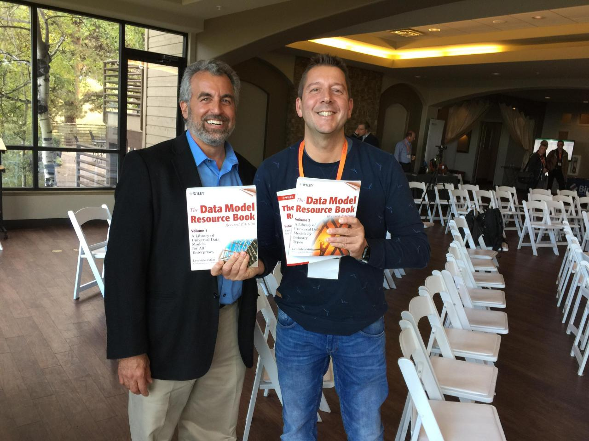

References & influences
My approach didn't appear from nowhere. It's built on decades of thinking by people who shaped how we model, historize and govern data. I've written about many of them — here's where to find their work.
Data Vault & Ensemble modeling
Ensemble Logical Modeling — a major influence on how I think about business-keyed, agile data models.
LinkedIn →His work on the historical staging area and data-engine thinking supports a model-driven framework.
LinkedIn →Modern Data Vault practice and patterns — a sharp, practical voice in the temporal-modeling community.
LinkedIn →His work on temporal data strengthens the bi-temporal / dual-SCD2 architectures I rely on.
LinkedIn →Shapes, with Hultgren, the evolution of ensemble modeling toward model-driven data engineering.
LinkedIn →His Hook-vs-Data-Vault thinking informed how I weigh modeling trade-offs.
LinkedIn →
Foundations of data warehousing
The case for 3NF and the business language model still shapes my integration-layer thinking.
Find his work →Timeless dimensional patterns that still shape modern, time-aware data platforms.
Kimball Group →Data Modeling Zone and a body of work that keeps the craft of modeling alive.
stevehoberman.com →The Data Model Resource Book series — universal, reusable patterns that underpin my business-oriented, reuse-first modeling.
LinkedIn →From whiteboards to working models — his thinking influenced how I run modeling sessions.
LinkedIn →Modern data & engineering
His work on SuperNova / data virtualization shaped my approach to delivery and the semantic layer.
LinkedIn →His principles (and Fundamentals of Data Engineering) reinforce a disciplined, model-driven approach.
LinkedIn →His Business Data Lake keynote thinking aligns with the model-driven future of data management.
LinkedIn →Links point to each person's public profile. I keep a running list of the thinkers I reference across my articles.
Personal knowledge management
Data architecture taught me rules and governance. PKM taught me linked, markdown-native thinking. Both turned out to be groundwork for the AI phase — the vault that organises my knowledge is now the context the model reasons over.
His Linking Your Thinking approach and Maps of Content shaped how I structure a connected vault — exactly the structure that now feeds AI.
linkingyourthinking.com →The PARA method and the second-brain idea — capturing and organising knowledge so it compounds instead of evaporating.
buildingasecondbrain.com →The atomic-note, link-as-you-think discipline behind durable knowledge — the smallest unit of structure.
Smart Notes →PKM gave me human-readable, linked structure; data architecture gave me rules and validation. AI needs both — and that convergence is where I work. More on the convergence →
What drives me
This isn't a reading list. It's intrinsic to how I think and work — the same operating system in my personal life and my professional one. See the system, find the model, build the structure, stay growth-minded. I don't switch it off when I leave the data behind; it's how I approach a project, a trip, a year, a life.
A latticework of mental models for clearer thinking and better decisions — the habit of reaching for the right model, not the first idea.
Farnam Street →Principle-centred effectiveness — begin with the end in mind, first things first. Structure applied to character and priorities.
The 7 Habits →Abilities grow with effort and learning. The mindset behind staying curious, reinventing, and treating every phase as a chance to grow.
Mindset →Designing work around life through systems, leverage and elimination — not more hours. Output over busyness.
tim.blog →A trusted system so the mind is for having ideas, not holding them. Capture, clarify, organise — productivity as structure.
GTD →Build the system and the results follow. Small, compounding, measurable improvements beat heroic one-off effort.
How I apply it →My interest in systems, models, productivity and a positive mindset is a real part of who I am — and it's the same instinct I bring to data and AI.
If these names are on your shelf too, we'll get along.
Start a conversation